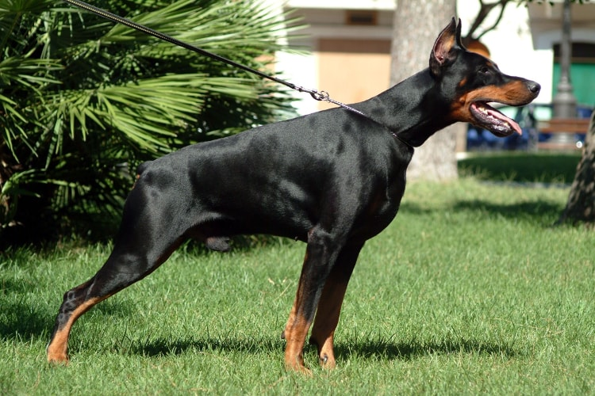

O Pastor Alemão com certeza merece estar na nossa lista, pois é um cachorro muito versátil. Eles possui impressionantes habilidades físicas, que se combinam com inteligência, apego e lealdade aos donos. Os atributos do Pastor Alemão fazem com que ele seja aproveitado em diferentes funções, desde o pastoreio de animais e guarda de propriedades rurais, que era sua função original, até cão-policial e cão para proteção pessoal.
Os Rottweilers são uma das raças mais antigas usadas para proteção pessoal. Eles acompanhavam os carregamentos de gado e de carne das fazendas para os açougues, na Alemanha de antigamente. Isso inclusive rendeu à raça o apelido de “cachorro de açougueiro”. O Rottweiler cumpre muito bem a função de proteger seus donos por ser forte, inteligente, leal e muito auto-confiante.
O Doberman possui uma história muito antiga na proteção dos seus donos, e eles inclusive surgiram para cumprir essa função. Seu corpo musculoso é mais leve do que pode parecer à primeira vista. Essa formação física é ideal para perseguir invasores, que com certeza terão dificuldades em se livrar dessa fera.
